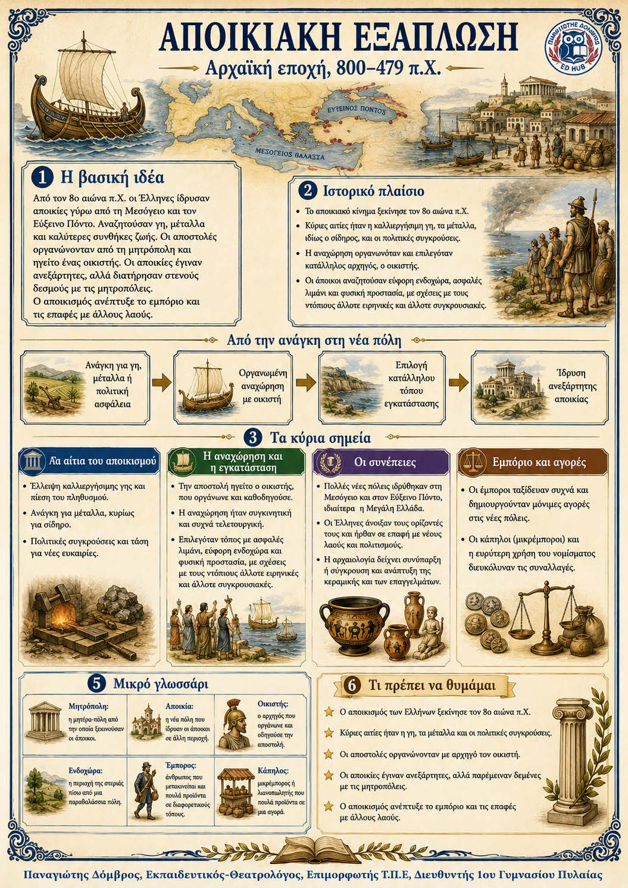

Πληροφοριογράφημα ενότητας
Το πληροφοριογράφημα αυτής της ενότητας δεν έχει ανέβει ακόμη. Οι σημειώσεις παραμένουν πλήρως διαθέσιμες.

Κεφάλαιο 4 · Αρχαϊκή εποχή, 800–479 π.Χ.
Από τον 8ο αιώνα π.Χ. πολλοί Έλληνες εγκαταστάθηκαν στα παράλια της Μεσογείου και του Εύξεινου Πόντου. Αναζητούσαν καλλιεργήσιμη γη, μέταλλα και καλύτερες συνθήκες ζωής. Η αναχώρηση οργανωνόταν από τη μητρόπολη και την αποστολή οδηγούσε ο οικιστής. Οι νέες πόλεις έγιναν σταδιακά ανεξάρτητες, αλλά κράτησαν στενούς δεσμούς με τη μητέρα-πόλη. Ο αποικισμός άνοιξε νέους δρόμους στο εμπόριο και έφερε τους Έλληνες σε επαφή με άλλους λαούς.
